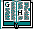
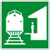

This year's BRICS theme is Algorithms in Quantum Information Processing. Events have taken place at the university of Aarhus in January 98. This webpage gives general information about the event, the participants, the location, the registration and more.

The Theme

Program
- List of invited speakers

- Program which also contains information about:
General Information
Background
The last few years, we have seen a rapidly growing interest in quantum computing, quantum cryptography and quantum information theory. A large number of conferences and workshops are devoted to these subjects. Typically, these events are somewhat specialized and include to a significant extent quantum physics and contributions from quantum physicists.While such events are clearly important, e.g. in order to disseminate the necessary physics background in the computer science community, we feel that there is also a need for an event that is devoted entirely to the computer science side of the field. We also feel that it is natural to cover the entire field of quantum information processing, that is, to include quantum computing, quantum cryptography and quantum information theory.
One specific reason for organizing such an event at the BRICS research center is that BRICS has recently started research activities in the area in cooperation with the Physics Institute at the university of Aarhus, covering both the theoretical and experimental side.
Format
A number of researchers in the area are invited to visit BRICS for as much of January 98 as they wish. Week 3, i.e. January 12-16 will be the focal point of the event. During that week, a program with various talks will be scheduled. We expect that the opportunity to interact informally and do joint work is one important reason for participating, and we will leave ample time in the program for this.
Contents
We will attempt to cover the entire field of quantum information processing, including quantum computing, quantum cryptography, quantum information theory, and related subjects from computer science. The fact that we will try to take a computer science point of view does (of course) not exclude subjects that relate to physics, but it does exclude subjects such as specific physical realizations of quantum cryptography and quantum computers.
Program Committee
Charles Bennett (T.J. Watson)André Berthiaume (Depaul University)
Richard Cleve (University of Calgary)
Ivan Damgård (chair) (BRICS)
Lov Grover (Lucent Tech.)
Peter Høyer (Odense University)
Louis Salvail (BRICS)
Umesh Vazirani (Berkeley)
- If you want to contact the program committee press here.
Between January 12 and 16, 1998, talks will be given by the invited speakers. The abstracts are also available from this page. The general organisation for the workshop is as follow:
- First talk from 9:00am to 9:45am
- Second talk from 9:45am to 10:30am
- Coffee break
- Third talk from 11:00am to 11:45am
- Fourth talk from 11:45am to 12:30pm
- Lunch from 12:30pm to 14:00pm
- Fifth talk from 14:00pm to 14:45pm
- Sixth talk from 14:45pm to 15:30pm.
List of invited speakers
Dorit Ahoronov (Hebrew University)
Robert Beals (University of Arizona)
Paul Benioff (Argonne National Laboratory)
Charles Bennett (T.J. Watson Laboratories)
André Berthiaume (Depaul University)
Gilles Brassard (University of Montréal)
Harry Buhrman (CWI)
Christian Cachin (MIT)
Richard Cleve (University of Calgary)
Claude Crépeau (University of Montréal)
J. Mark Ettinger (Los Alamos National Laboratory)
Lance Fortnow (University of Chicago)
Markus Grassl (University of Karlsruhe)
Lov Grover (Lucent)
Peter Høyer (Odense University)
Richard Jozsa (University of Plymouth)
Dominic Mayers (Princeton)
Tal Mor (University of Montréal)
Michele Mosca (University of Oxford)
John Rogers (Depaul University)
Louis Salvail (BRICS)
John Smolin (T.J. Watson Laboratory)
Alain Tapp (University of Montréal)
Amnon Ta-Shma (ICSI)
Barbara Terhal (CWI)
Wim van Dam (University of Oxford/CWI)
Umesh Vazirani (Berkely)
John Watrous (University of Wisconsin)
The list of people (not from the list above) having registered so far can be seen here.
Here you can find the picture of participants.

Abstracts and Program
Generality:
Aarhus is the second largest town in Denmark with a population of more than 250,000 souls including suburbs (209,404 in the town itself). The city is located in the County of Aarhus. The university campus is located within 10-15 minutes walk from downtown. Today the University of Aarhus has about 18,000 students and 3,000 employees.
BRICS offers an international PhD School in computer science at the University of Aarhus. The school provides a PhD program in computer science, and admits 10-12 students annually. The school is funded by the Danish National Research Foundation, and institutionally the school is a part of the Department of Computer Science at University of Aarhus, i.e., it operates within the university regulations, and all PhD candidates get their degree from the University of Aarhus.
The purpose of the PhD School is: to create a truly international graduate school in Denmark, offering a program of courses and project work of high scientific quality, and to recruit Danish as well as foreign PhD students of the highest international standards. It provides an excellent research environment and scientific training facilities, and aims at making its PhD graduates attractive for a wide spectrum of employers - in private and public research and development institutions, both in Denmark and abroad.
This introduction and more information about BRICS can be found
here.
Registration Information
Travel Information

How to get to the University and the Computer Science Department:
Address
Algorithms in Quantum Information Processing '98BRICS, Department of Computer Science
University of Aarhus
Building 540, Ny Munkegade
DK-8000 Aarhus C, Denmark
Hotel Information
As indicated above, it is possible to get one of the hotel rooms from our pre-booking. The rooms will be assigned to the first demands. The cost is 535DKK per night. The address of the hotel is:
Plaza Hotel Aarhus
Banegårdspladsen 14
DK-8100 Aarhus C .
Tlf. +45 87 32 01 00
Fax. +45 87 32 01 99.
Because the number of rooms is limited, it might be the case that you will have to make your own reservation. In that case, you can look at this list of hotels.
More local information can be found at the following links:
Organizing Committee
Janne Kroun Christensen (BRICS)
Ivan Damgård (BRICS)
Gudmund Frandsen (BRICS)
Karen Kjær Møller (BRICS)
Erik M. Schmidt (BRICS)
 You can write to us by e-mail if you have
questions about the organization.
You can write to us by e-mail if you have
questions about the organization.
Last modified: December 24, 1997 by Louis Salvail.
You can write to me if you experience problems with this WEB page and/or the uploading mechanism (e-mail).